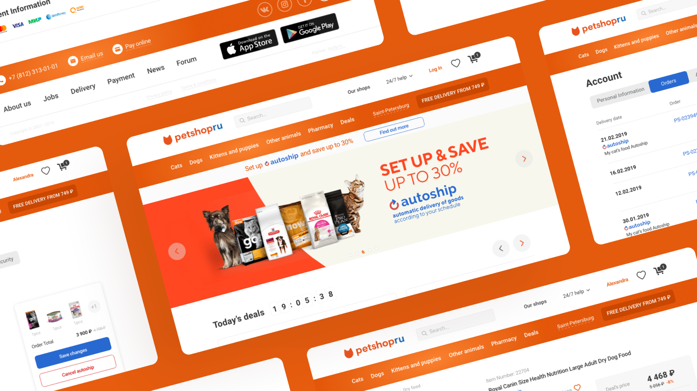
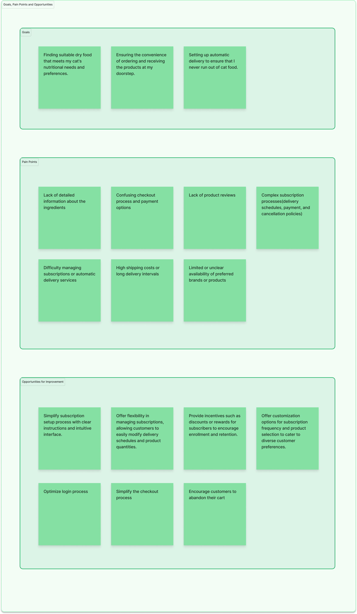
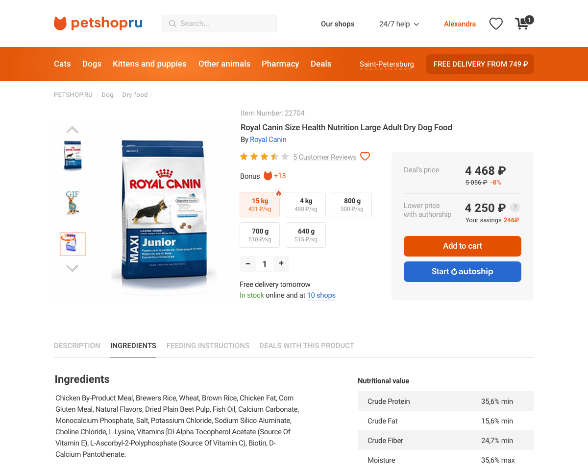
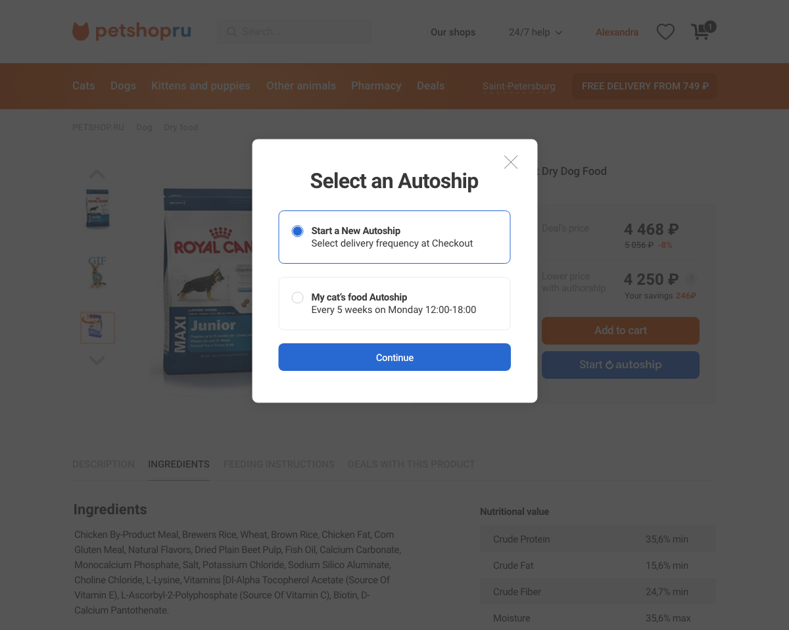
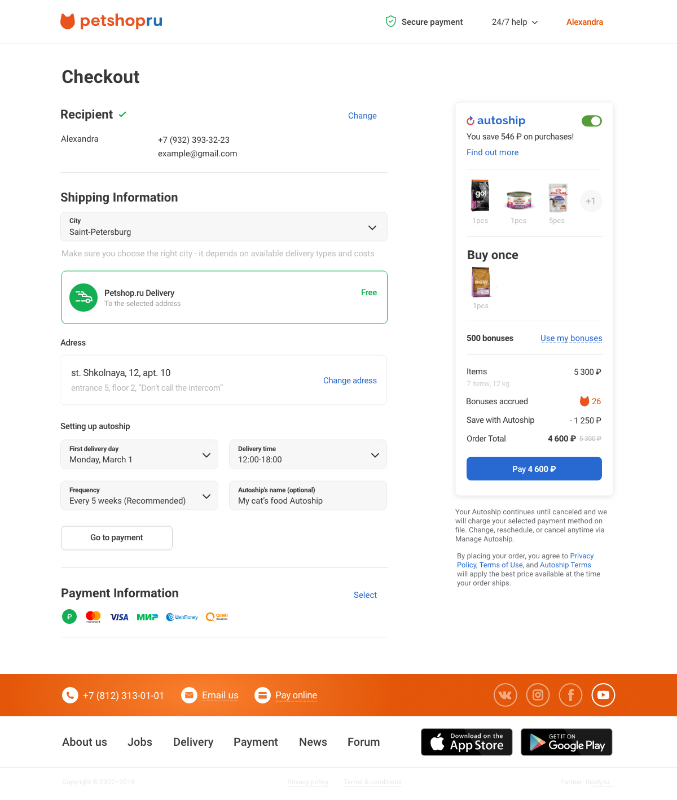
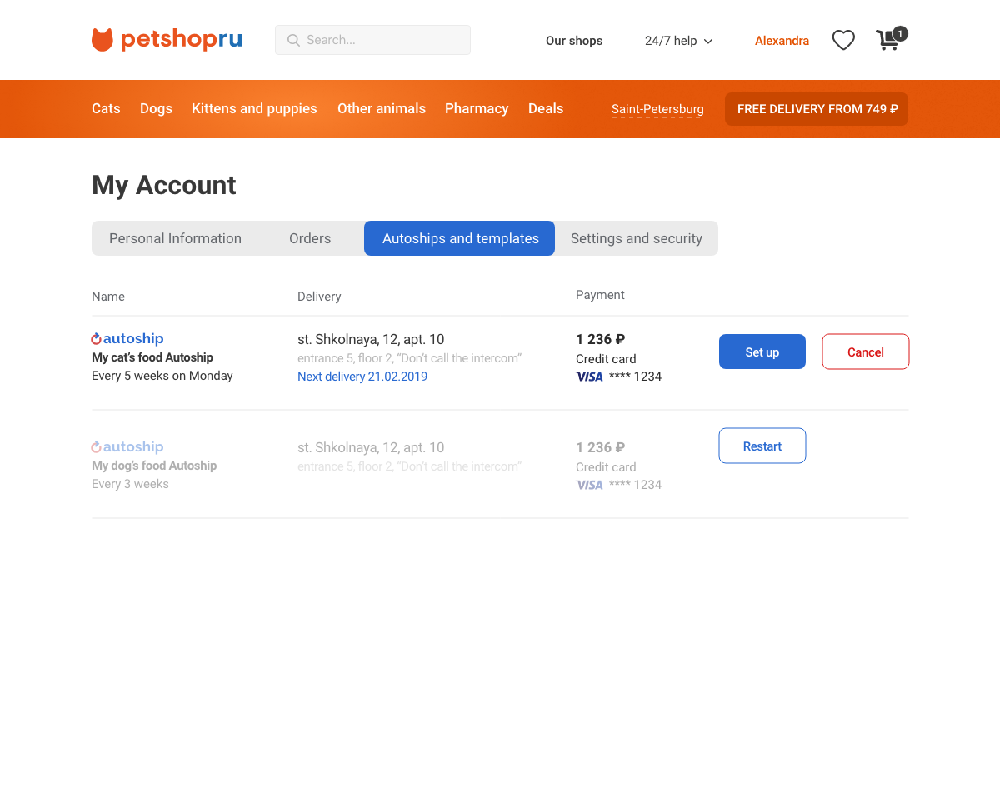
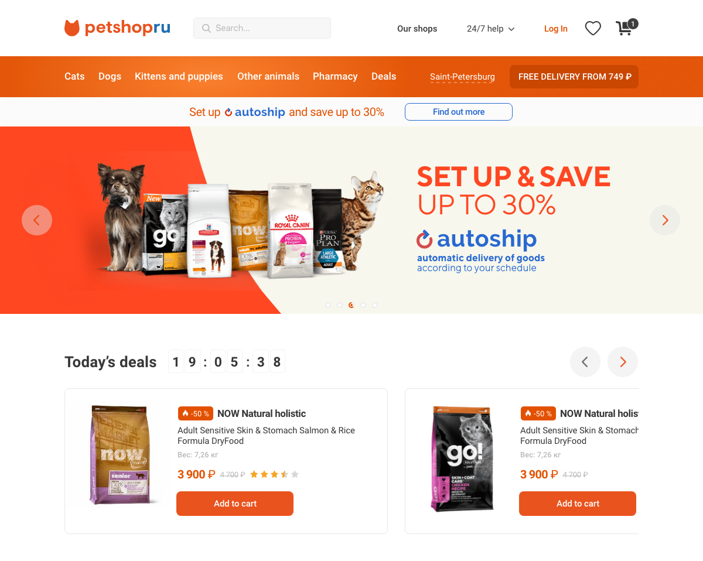

Autoship — recurring delivery, new to the market
Recurring "autoship" delivery — a proven US pattern, brought to a Russian market that had never seen it.

Overview
The company wanted a completely new way to order — automatic, scheduled recurring delivery (set the frequency, weekday and time). In 2019 this didn't exist in the Russian market, so user education mattered as much as the interface. We adapted a model already proven by US retailers and re-validated it for local customers. Within the team, I worked on the parts that carried that trust — the awareness touchpoints and the checkout. After launch, the company expanded the bet into a broader checkout redesign.
The problem
Launching recurring delivery wasn't a feature problem — it was a behaviour problem; the biggest risk was confusing customers with something they'd never seen. The business case was broad: save customers time and build loyalty, grow recurring revenue, and — the less obvious win — make demand predictable, so the company always knows how much to reorder from suppliers. It was a genuinely new approach, and a real bet that might not have flown.
Research & discovery
We built on real input, not assumptions:
- Interviewed customers and call-centre staff about expectations and real pain points.
- Studied US retailers where subscription already worked — with the explicit caution that what works abroad may not transfer here.
- Corridor-tested prototypes to check the purchase flow and the new terminology read clearly.


How the team solved it
The team framed Autoship around a few key decisions:
1. Opt-in, layered on top of normal shopping
2. Sell it where the decision happens — the product card
3. A checkout that reassures
4. Easy exit = trust to commit
5. Educate across every touchpoint
My focus: I designed the education layer — the banners, the slider and the plain-language explanation page — and the checkout, where a new kind of order had to feel safe and clear without disrupting a familiar flow. In a launch that was really about teaching a new behaviour and earning trust, that was my front line.





Human-first, then automated
At launch, every Autoship order was confirmed by a person in the call-centre — and that was deliberate. The behaviour was brand new, so a human could explain how it worked and answer the questions people had. The trade-off was real: it was manual, didn't scale, and a call isn't what every customer wants. So as Autoship became familiar, we moved to automated confirmation. Human-first while it was unfamiliar; automated once it wasn't.
Outcome
- Autoship shipped across the shop — and the company expanded the bet, triggering a broader cart, checkout, navigation and login redesign. The clearest sign a feature works: the org invests more in it.
- Per the analytics team, orders and average order value rose after launch, with adoption strongest in major cities.
- Recurring delivery is a standard pattern now — we shipped it for this market before it was.
What I learned
- Introducing a new behaviour is mostly education, not UI. Giving people a mental model for something they'd never done was harder than any screen.
- Adapting a proven pattern isn't copying it. A model that worked in the US couldn't be lifted into different habits and trust — you re-validate, you don't assume it transfers.
- A flow isn't "done" at the screen. The manual call-centre step taught me the operational reality is part of the experience — design the system, not just the UI.
- Make it easy to leave and people are willing to start. Easy skip, pause and cancel was what made customers willing to commit to recurring billing.